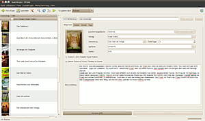
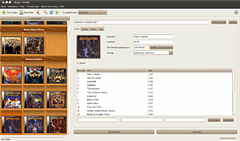

GCstar
Dieser Artikel wurde für die folgenden Ubuntu-Versionen getestet:
Ubuntu 14.04 Trusty Tahr
Zum Verständnis dieses Artikels sind folgende Seiten hilfreich:
GCstar  ist ein Programm zur Verwaltung von Sammlungen. Es bietet eine Vielzahl an Sammlungsvorlagen für die gängigsten Sammlungstypen, mit der Möglichkeit, im Internet nach den Gegenständen zu suchen. Falls man mit den bereitgestellten Vorlagen nicht zufrieden ist oder keine passende findet, kann man auch selbst eine nach den eigenen Vorgaben erstellen. Das Programm integriert sich sowohl in GNOME als auch KDE gut.
ist ein Programm zur Verwaltung von Sammlungen. Es bietet eine Vielzahl an Sammlungsvorlagen für die gängigsten Sammlungstypen, mit der Möglichkeit, im Internet nach den Gegenständen zu suchen. Falls man mit den bereitgestellten Vorlagen nicht zufrieden ist oder keine passende findet, kann man auch selbst eine nach den eigenen Vorgaben erstellen. Das Programm integriert sich sowohl in GNOME als auch KDE gut.
Installation¶
Folgende Pakete müssen installiert werden:
gcstar (universe)
 mit apturl
mit apturl
Paketliste zum Kopieren:
sudo apt-get install gcstar
sudo aptitude install gcstar
Installation aus einem PPA¶
Das Programm kann auch aus einem PPA[2] installiert werden.
Adresszeile zum Hinzufügen des PPAs:
ppa:gcstar/ppa
Hinweis!
Zusätzliche Fremdquellen können das System gefährden.
Ein PPA unterstützt nicht zwangsläufig alle Ubuntu-Versionen. Weitere Informationen sind der  PPA-Beschreibung des Eigentümers/Teams gcstar zu entnehmen.
PPA-Beschreibung des Eigentümers/Teams gcstar zu entnehmen.
Damit Pakete aus dem PPA genutzt werden können, müssen die Paketquellen neu eingelesen werden.
Danach findet man das Programm unter "Anwendungen -> Büro -> GCstar Collections Manager"

Bedienung¶
Die Bedienung von GCstar ist unabhängig von der gewählten Sammlung überall ähnlich, weshalb hier nicht auf einzelne Typen eingegangen wird. Manche der hier erwähnten Menüpunkte sind nur bei aktiviertem "Expertenmodus" in den Einstellungen zu finden.
Sammlungstypen¶
Unter "Datei -> Neu" ist es möglich neue Sammlungen anzulegen, dabei öffnet sich ein Dialogfenster um den Typ der Sammlung zu bestimmen.
"Neuer Sammlungstyp": Hier kann man eigene Sammlungen anlegen.
"Eigene Modelle": Hier hat man Zugriff auf die selbst erstellten Sammlungstypen. Erscheint nur wenn man zumindest einen eigenen Sammlungstyp angelegt hat.
"Vorgegebene Modelle": Diese Modelle wurden von den GCStar Entwicklern vordefiniert.
"Brettspielsammlung"
"Briefmarkensammlung"
"Büchersammlung"
"Comicheftsammlung"
"Computerspiele Sammlung"
"Episodensammlung von Fernsehserien"
"Fernsehseriensammlung"
"Filmsammlung"
"Miniaturfahrzeugsammlung"
"Musiksammlung"
"Numismatische Sammlung"
"Softwaresammlung"
"Telefonkartensammlung"
"Weinsammlung"
"Zeitschriftensammlung"
"Importieren": GCStar unterstützt den Import verschiedenen Datenformate
"Alexandria"
"Ant Movie Catalog"
"DVDProfiler"
"Ordner"
"GCfilms"
"MyMovies"
"Tellico"
Sammlung verwalten¶
Grundsätzlich sind alle Sammlungen ähnlich aufgebaut. Links befindet sich eine Liste der Gegenstände in der Sammlung, rechts gibt es nähere Informationen zum aktuell gewählten Gegenstand und darüber die Suchfelder für die Internetsuche. Einen neuen Gegenstand erstellt man mit dem Knopf "Hinzufügen", es erscheint eine leere Maske, die man nun selbst ergänzen oder durch die Internetsuche ausfüllen lassen kann.
Internetsuche¶
GCstar bietet für einige Sammlungen die Möglichkeit an, nähere Informationen aus dem Internet herunterzuladen. Beim ersten Aufruf erscheint eine Maske in der man die Website, die durchsucht werden soll, festlegen kann. Kreuzt man "Gewählte Seite für zukünftige Suchen verwenden" an, so wird zukünftig direkt diese Seite durchsucht. Falls mehrere mögliche Ergebnisse gefunden werden, erscheint ein Fenster in dem man einen oder mehrere Gegenstände wählen kann. Wird nur ein passender Gegenstand gefunden, werden die Informationen direkt geladen.
Unter "Einstellungen -> Einstellungen -> Internet -> Datenimport" kann man die Internetsuche näher konfigurieren.
"Seite zum Bezug von Informationen"
"Fragen (Alle Seiten)": Bei jedem Suchvorgang erscheint die Suchmaske und man kann aus allen Webseiten wählen.
"Fragen (Mehrere...)": Bei jedem Suchvorgang erscheint die Suchmaske und man kann aus den voreingestellten Internetseiten wählen.
"Mehrere...": Es werden alle voreingestellten Internetseiten durchsucht.
"Mehrere... (pro Feld)": Hier kann man jedem Feld eine oder mehrere Internetseiten zuweisen.
"Internetseite": Wählt man eine Seite aus so wird diese bei jedem Suchvorgang durchsucht.
Wählt man "Fragen (Mehrere...), Mehrere..., Mehrere... (pro Feld)" erscheint der Knopf "Sammlung bearbeiten" für weitere Einstellungen.
"Zu importierende Felder wählen": Diese Option verhindert, dass die Informationen direkt eingetragen werden und öffnet ein Fenster mit den Informationen und der Möglichkeit nur bestimmte Felder zu importieren.
Metadaten für deutsche TV-Serien¶
Standardmäßig wird in GCstar das Tvdb-Plugin für die Internetsuche von Metadaten installiert. Leider werden standardmäßig keine Daten aus der deutschen Tvdb importiert. Dies lässt sich einfach ändern, indem man das Tvdb-Plugin erweitert. Die Dateien (Perl-Scripte) des Tvdb-Plugins liegen unter /usr/share/gcstar/lib/GCPlugins/GCTVepisodes/. Dort kopiert man eine der bestehenden Dateien wie z.B. GCTvdbFR.pm in eine neue Datei mit dem Namen GCTvdbDE.pm und ändert die Länderkennungen.
cd /usr/share/gcstar/lib/GCPlugins/GCTVepisode sudo cp GCTvdbFR.pm GCTvdbDE.pm
Anschließend mit einem Editor mit Root-Rechten den Inhalt von GCTvdbDE.pm wie folgt ändern:
use strict;
use GCPlugins::GCTVepisodes::GCTvdb;
{
package GCPlugins::GCTVepisodes::GCPluginTvdbDE;
use base qw(GCPlugins::GCTVepisodes::GCPluginTvdb);
sub getLang
{
return 'DE';
}
sub getName
{
return "Tvdb DE";
}
sub siteLanguage
{
my $self = shift;
return 'de';
}
sub siteLanguageCode
{
my $self = shift;
return 14;
}
}
1;Nach dem Speichern sollte das TvdbDE-Plugin bei den installierten Plugins aufgeführt werden und genutzt werden können.
Anzeige¶
Die Anzeige von GCStar lässt sich in vielen Bereich anpassen.
Skin¶
Unter "Einstellungen -> Einstellungen -> Allgemein" kann man je nach verwendeter Desktopumgebung einen Skin wählen. Wählt man den Skin GCstar, so werden die GCstar Icons verwendet, ansonsten die des Systemstandards.
Informationsanzeige¶
Unter "Einstellungen -> Einstellungen -> Anzeige" kann man das Aussehen von GCstar seinen persönlichen Wünschen anpassen.

"Listenansicht": Bestimmt das Aussehen der Gegenstandsliste.
"Text": Zeigt nur den Namen des Gegenstands
"Bilder": Sofern Bilder hinterlegt sind können auch diese angezeigt werden. Unter "Einstellungen" kann man Hintergrund und Effekte bearbeiten.
"Detailliert": Unter "Einstellungen" kann man die Liste individuell anpassen.
"Layout": Dient zum Umschalten zwischen Bearbeitungs- und Lesemodus.
"Tabs": Bearbeitungsmodus
"Nur Lesen": Lesemodus, man kann zwischen verschiedenen Skins wählen.
"Werkzeugleiste": Die Werkzeugleiste muss man an zwei Orten konfigurieren.
"Position": Unter "Einstellungen -> Einstellungen -> Anzeige -> Werkzeugleiste"
"Zusammensetzung": Unter "Einstellungen -> Werkzeugleiste konfigurieren"
Sichtbare Felder¶
Falls man nicht alle vorkonfigurierten Felder verwenden will, kann man unter "Einstellungen -> Sichtbare Felder" die Unerwünschten ausblenden.
Wiedergabe aus GCstar¶
Es gibt die Möglichkeit Medien direkt aus GCstar zu starten. Standardmäßig werden dabei die Systemstandards verwendet, unter "Einstellungen -> Einstellungen -> Pfade -> Anwendungsprogramme" lässt sich dieses Verhalten ändern. Diese Funktion unterscheidet sich je nach Sammlungstyp etwas, doch grundsätzlich ist sie immer unter dem Tab "Details" zu finden.
| Sammlungstyp | Details |
| Buchsammlung | Digitalversion des Buches als E-Book, PDF oder Textdatei |
| Musiksammlung | Wiedergabeliste |
| Film-, Fernsehserien-, Episodensammlung | Videodatei, verschiedene Ton- bzw. Untertitelspuren möglich |
| Spiele-, Softwaresammlung | Startdatei |
Verleih¶
Entleiher¶
Unter "Einstellungen -> Entleiher" verwaltet man zentral alle Personen denen man etwas geliehen hat, egal aus welcher Sammlung. Dabei wird nur der Name und die E-Mail Adresse hinterlegt. In diesem Menü kann man auch die Vorlage für die E-Mails verfassen.
Verleih¶
Um einen Gegenstand zu verleihen, muss zuerst der Entleiher angelegt worden sein. Anschließend wählt man bei dem verliehenen Gegenstand den Tab "Verleih" und gibt das Verleihdatum an. Nun klickt man auf "Element zurückgeben" und wählt den geplanten Rückgabetermin. Der Entleiher wird dann in den Verlauf eingetragen.
E-Mail¶
Um E-Mails zu versenden, muss man zuerst unter "Einstellungen -> Einstellungen -> Internet -> Einstellungen" seine E-Mail-Adresse sowie sein verwendetes E-Mail-Programm angeben. Vorkonfiguriert sind Sendmail, SMTP, Claws Mail, Evolution und Thunderbird. Unter "Email Programmeinstellungen" kann man selbst weitere hinzufügen. Um jemanden an eine ablaufende Frist zu erinnern, muss man den betreffenden Gegenstand auswählen und im Reiter "Verleih" den Entleiher auswählen. Mit Klick auf "E-Mail senden" öffnet sich im voreingestellten Programm ein Fenster, in dem man den Text nochmal bearbeiten kann.
Verliehenes anzeigen¶
Unter "Datei -> Verliehenes anzeigen" hat man Überblick über alle verliehenen Gegenstände der geöffneten Sammlung. Eine automatische Erinnerung bzw. Benachrichtigung über anstehende Rückgabetermine gibt es nicht.
Meine Sammlung¶
Unter "Meine Sammlung" kann man seine verschiedenen Sammlungstypen verwalten und sie in Verzeichnisse ordnen. Unter "Meine Sammlung -> Sammlung bearbeiten" kann man neue Verzeichnisse anlegen und Sammlungen hinzufügen oder verschieben. Alternativ kann man mit "Meine Sammlung -> aktuelle Sammlung hinzufügen" die geöffnete Sammlung einem beliebigen Verzeichnis hinzufügen. Die Sammlungen werden anschließend unter "Meine Sammlung" angezeigt und können direkt aufgerufen werden.
Importieren/Exportieren¶
GCstar unterstützt, abhängig vom Sammlungstyp, den Import von Sammlungen aus anderen Verwaltungsprogrammen, unter anderem aus Alexandria, Ant Movie Catalog, Tellico und anderen. Der Aufruf erfolgt über "Datei -> Importieren".
"Datei -> Exportieren" bietet verschiedene Exportformate, darunter HTML um seine Sammlung statisch im Browser anzuzeigen und auch verschiedene Datenbanktypen. Um seine Sammlung als GCstar-Datei zu exportieren muss man "externes Medium" wählen.
 Programmübersicht
Programmübersicht- Erstellt mit Inyoka
-
 2004 – 2017 ubuntuusers.de • Einige Rechte vorbehalten
2004 – 2017 ubuntuusers.de • Einige Rechte vorbehalten
Lizenz • Kontakt • Datenschutz • Impressum • Serverstatus -
Serverhousing gespendet von